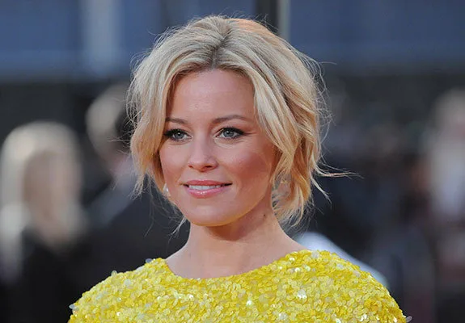

Голодные игры
The Hunger Games
Сюжет
Сюжет разворачивается в постапокалиптическом государстве Панем, возникшем на территории бывшей Северной Америки. Панем состоит из богатого Капитолия и двенадцати бедных дистриктов. В наказание за давнее восстание Капитолий ежегодно устраивает «Голодные игры» — жестокое реалити-шоу на выживание, где по жребию выбирают одного юношу и одну девушку от каждого дистрикта. Этих подростков называют трибутами, и они должны убивать друг друга на специально созданной арене, пока не останется только один победитель.
Главная героиня — шестнадцатилетняя Китнисс Эвердин из самого бедного, двенадцатого дистрикта. После смерти отца она незаконно охотится в лесах, чтобы прокормить мать и младшую сестру Прим. В день Жатвы жребий падает на Прим. Не раздумывая, Китнисс вызывается добровольцем, чтобы занять место сестры. Вторым трибутом от Дистрикта 12 становится Пит Мелларк, сын пекаря, который когда-то давно спас голодающую Китнисс, дав ей хлеб.
Китнисс и Пита отправляют в Капитолий, где их наставником становится Хеймитч Эбернети — единственный живой победитель Игр из их дистрикта. Стилист Китнисс, Цинна, создаёт ей образ «Девушки в огне». Во время предыгрового интервью Пит публично признаётся Китнисс в любви, что становится частью их стратегии по привлечению спонсоров. На Арене Китнисс полагается на навыки охоты и объединяется с Рутой, маленькой девочкой из Дистрикта 11. В финале, когда они с Питом остаются последними выжившими, Капитолий отменяет новое правило, требующее победы только одного. Не желая убивать друг друга, Китнисс и Пит угрожают одновременно съесть ядовитые ягоды. Организаторы останавливают их и объявляют обоих победителями. Этот поступок становится актом открытого неповиновения, закладывающим искру будущего восстания.
Режиссёр
Актёрский состав


